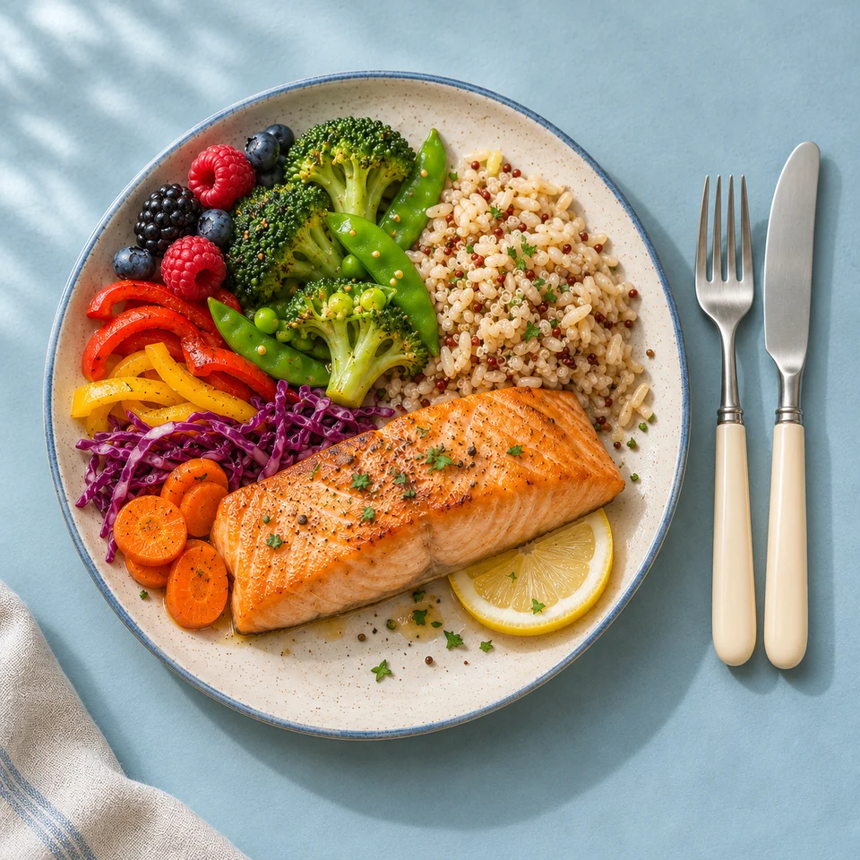

家庭餐单 Demo
示例家庭喜欢清淡口味，有坚果过敏。正式版可规划七晚。
用量随人数和换菜自动更新。勾选表示家里已有。
去 Whole Foods 买菜 ↗也可以点每样食材旁的「查找」，规格、价格和送货选项在 Whole Foods 确认。
下周采购清单
以下是示例记录。正式版由家人确认实际吃了哪些晚餐。
照菜单吃了 4 顿，其中 1 顿有全谷物。
下周想试试把一顿的主食换成糙米吗？
下周菜单 姜葱鸡、西兰花配糙米
下周采购清单
餐单按兼顾血糖和血脂的一般饮食原则设计。个人医疗建议请咨询医生。
Anna 的新居心意
一瓶有机特级初榨橄榄油
客户留下姓名和邮箱，Anna 可以通过 Amazon 送出礼物邀请，收货地址由客户在 Amazon 里填写。
看看 Anna 的每月问候示例
Anna Wang · 本月厨房问候
Alex，你好！这周试试用一点橄榄油烤彩椒和西兰花。如果想少花点时间想菜单，打开家庭餐单看看这周可以做什么。祝你们在新家吃得开心！
每封问候都附退订入口。
设计与使用说明
- 客户收到什么
- 一年的家庭餐单服务。换菜后采购清单自动更新，可直接去 Whole Foods 找食材。晚餐回顾会给出一条可用到下周的食材建议。
- Anna 怎么送
- Binya 为每户生成独立邀请，Anna 一对一发送，会员从赠送日起有效 12 个月。想加送橄榄油时，Anna 可用客户填写的邮箱通过 Amazon 发礼物邀请。
- 客户怎么用
- 用平时使用的 Safari 或 Chrome 打开邀请并开通，然后设定人数和忌口。平时用每周菜单和采购清单，周末可做晚餐回顾。开通后沿用同一个浏览器。
接通 Anna 的 Gmail 后，她就可以收到领取申请，并给自愿订阅的客户按月发问候。每封邮件都附退订入口。
把餐单放到手机主屏幕
用 iPhone 的 Safari 打开这页。点「分享」→「添加到主屏幕」。如果看到「作为网页 App 打开」，开启后点「添加」。下次点主屏幕上的 Anna Meals Demo 图标就能打开。
想听听 Anna 的意见
- 送给客户时，你希望他们第一眼看到什么？
- 领取橄榄油、选餐或去 Whole Foods 买菜，哪一步还可以更简单？
- 每月问候里，你最想跟客户分享什么？